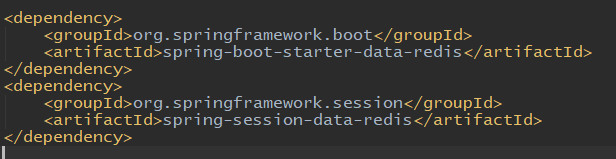
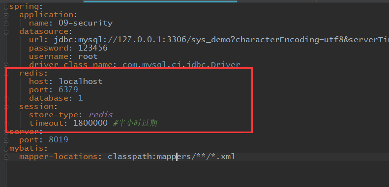
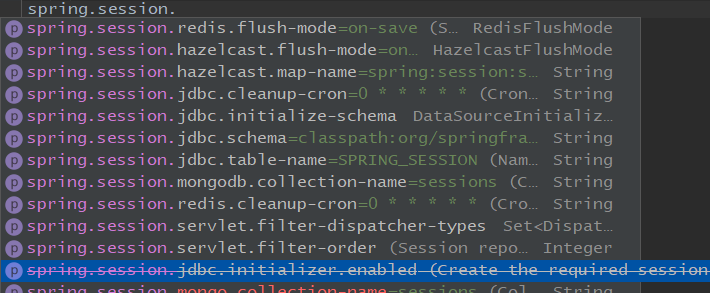
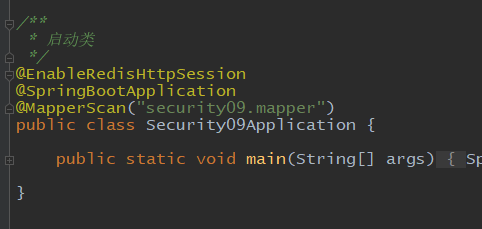
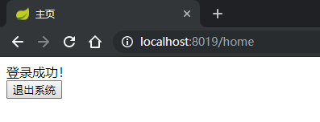
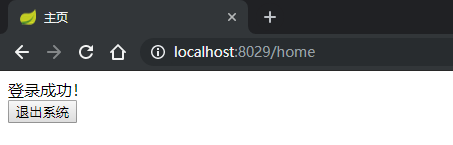
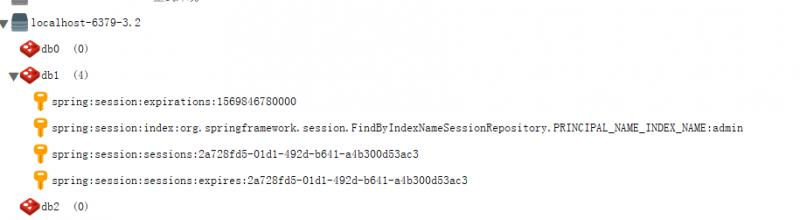

当后台项目由部署在一台改为部署在多台以后，解决session共享问题最常用的办法就是把session存储在redis等缓存中。关于session和cookie概念这里就不再赘述了，在springboot-security环境下，把session存储到redis中共享是非常非常简单的，除了多了一些配置，几乎不用改任何代码。共享session达到的效果就是，用户在一台服务器上面登录成功后，访问另外一台，用户也是处于登录状态。下面创建两个一样的项目，来配置session共享。
把session存储在redis中配置共享，需要添加两个依赖，一是redis，二是spring session：

在配置文件中，需要配置redis的数据源和session的一些属性：

关于session的配置，可以根据ide的提示看一下：

可以看到session的存储不仅可以在redis中，还可以在数据库或者MongoDB中，不过目前redis是选择最多的一种方式。
最后在启动类中添加一个注解 @EnableRedisHttpSession ：

先打开一个项目的登录页面，登录成功，

然后再打开一个浏览器，直接访问第二个项目的主页，此时不用登录直接可以访问：

来看一下session在redis中的存储：

这样就实现了session共享！此时把其中一个退出，另一个也会自动退出，redis 中的session数据也会自动删除。
代码地址 ： https://gitee.com/blueses/spring-boot-security 091 092